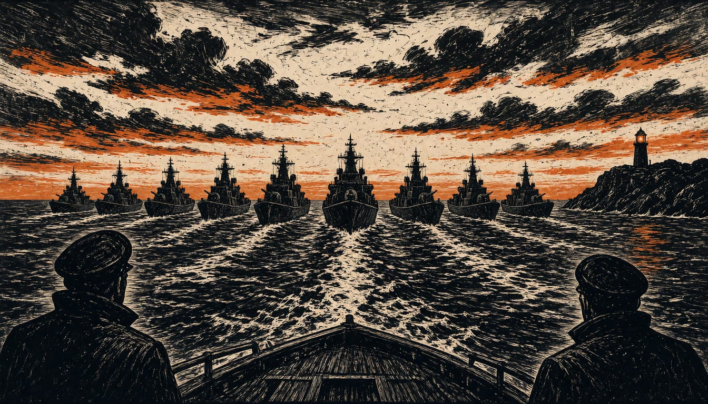

Ten northern European countries to run their navies as one force
The 10 November pact would let parts, ammunition and crews swap across the ten navies. Norway's PM calls it a response to US cuts to aircraft and submarines offered to NATO.

Ten Joint Expeditionary Force countries will sign a pact on 10 November to run their naval forces as one, to deter future threats from Russia. The pact covers Denmark, Estonia, Finland, Iceland, Latvia, Lithuania, the Netherlands, Norway, Sweden and the UK. In July, Washington told European allies it would cut the fighter aircraft it offers NATO in a crisis by a third. It would halve its bombers and stop providing submarines.
The pact will line up doctrine, training, planning, sustainment and capability development so equipment, parts, ammunition or personnel can be substituted, swapped or mixed across the participating navies. The Royal Navy put that plan on its website in July. It said the security environment is changing fast, with growing competition at sea driven by undersea threats, seabed infrastructure risks and advancing technologies. British First Sea Lord Gwyn Jenkins said the joint force will complement NATO, answer crises faster and be commanded from Northwood in London.
Alliance sources called the move burden sharing and a step toward a more European NATO. Norway's Prime Minister, Jonas Gahr Støre, said Europe and Canada were making a significant contribution to security in the North Atlantic and High North. He called it a direct response to Washington's call for others to carry more of Europe's defence.
Norway proposed the idea for a broad maritime partnership. In October, the defence ministers of the Joint Expeditionary Force, a UK-led group of Northern European nations, said their countries do not seek confrontation and pose no threat to Russia. They said Russia should be in no doubt that "we will defend ourselves". The same ministers said they would build their defences against Russian hybrid activity and sabotage, and would not be deterred from supporting Ukraine.
HMS Prince of Wales will host the Atlantic Future Forum and the International Sea Power Conference in Oslo. The events run in the week beginning 9 November, with Jenkins leading the Royal Navy's role. European military and political leaders will attend. The pact builds on the Maritime Proposition, which all ten JEF nations agreed in July.